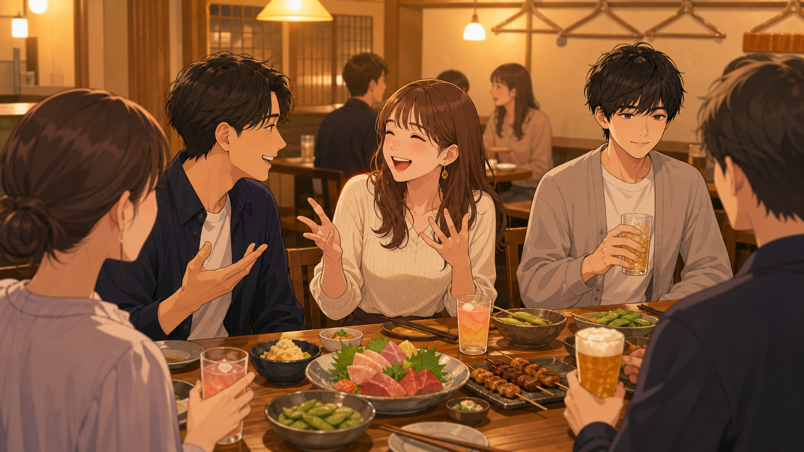

MBTI
ESFJ【領事】
Fukazawa Profile
ESFJとFCPOの深澤が、恋愛や会話の場面でどんな回答を選びそうか予想するゲームです。
Profile

周りの空気を読みながら動くけど、恋愛では意外と感情が表に出やすいタイプ。
この先の問題では、一般的な正解ではなく「深澤が実際に選びそうな回答」を予想してください。正解・不正解は一般論ではなく、深澤本人の主観です。
問題に進むと、深澤編の途中経過がこのブラウザに保存されます。
Quiz
どの選択肢も不正解ではありません。深澤本人に一番刺さりそうな返し方を選んでください。

深澤一致度
--